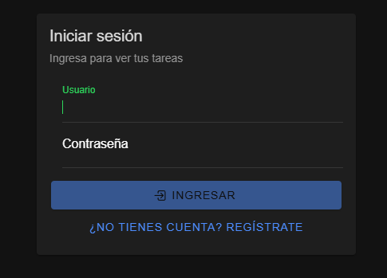
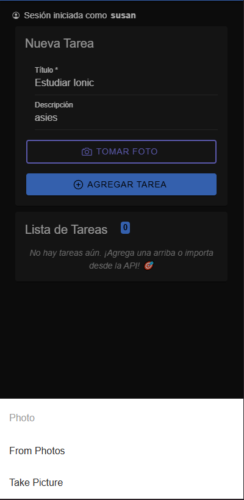
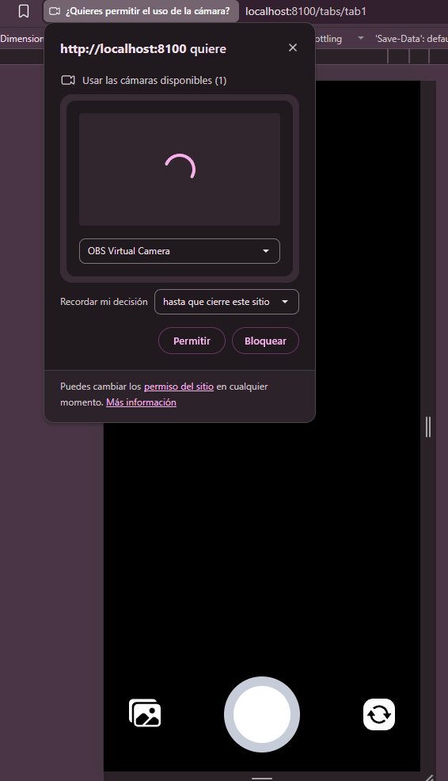
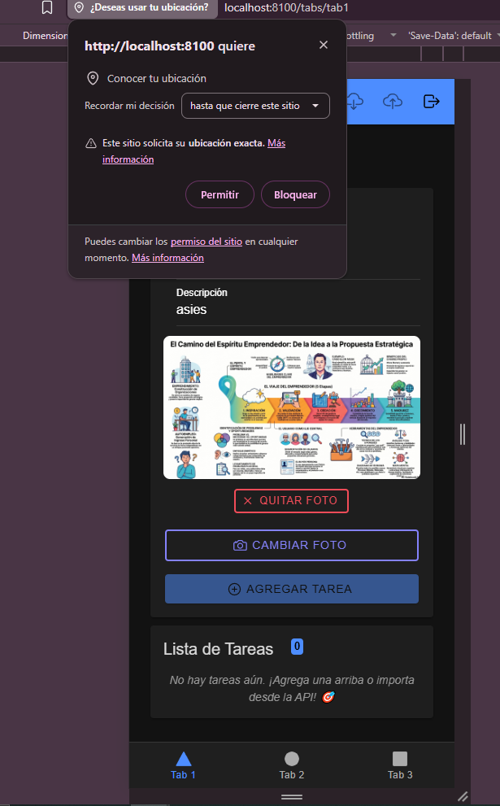
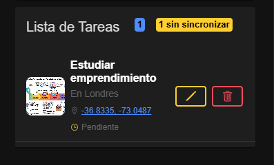
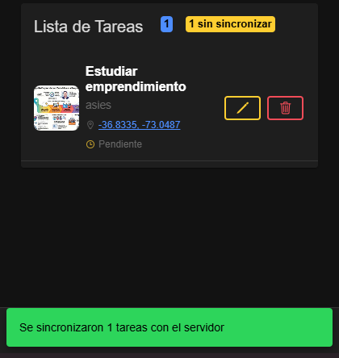
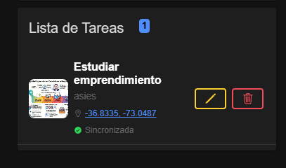
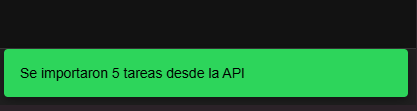
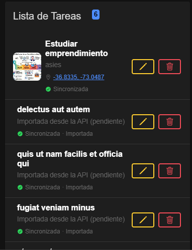
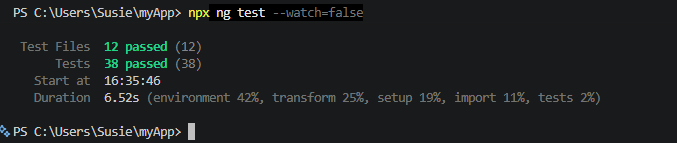

Estudiante: Susan Arteaga M
Fecha de entrega: 15 de noviembre de 2026
Asignatura: Desarrollo de aplicaciones móviles
Instructor: Vicente Zapata
En esta segunda etapa se amplió la aplicación móvil ToDo List desarrollada con Ionic y Angular, incorporando los periféricos de cámara y GPS mediante plugins de capacitor, almacenamiento local avanzado, un sistema de autenticación multiusuario con protección de rutas, integración con una API REST externa para importar y sincronizar tareas remotamente, y una suite de pruebas unitarias y de integración automatizadas con Vitest.
| Categoría | Requisito | Estado |
|---|---|---|
| Periféricos | Capturar imágenes desde la cámara o galería y adjuntarlas a cada tarea | ✅ Cumplido |
| Periféricos | Registrar automáticamente la ubicación GPS (latitud y longitud) al crear cada tarea | ✅ Cumplido |
| Servicios Web y APIs | Sincronizar las tareas locales pendientes con un servicio web externo (POST) |
✅ Cumplido |
| Servicios Web y APIs | Importar tareas desde una API externa (GET) e integrarlas a la lista local |
✅ Cumplido |
| Pruebas Automatizadas | Pruebas unitarias y de integración para cámara, geolocalización, API, almacenamiento y login | ✅ Cumplido (38 tests) |
| Evolución: Almacenamiento | Almacenamiento local persistente con Capacitor Preferences (funciona offline) | ✅ Cumplido |
| Evolución: Autenticación | Registro, inicio/cierre de sesión con hash SHA-256 y listas aisladas por usuario | ✅ Cumplido |
| Tecnología / Plugin | Versión | Propósito en el proyecto |
|---|---|---|
| Node.js | v24.16.0 | Entorno de ejecución |
| Ionic CLI | 7.2.1 | Herramienta de línea de comandos para desarrollo y compilación |
| Ionic Framework | @ionic/angular 9.0.9 |
Componentes de interfaz móvil (Standalone Components) |
| Angular | 22.2.3 | Framework frontend, inyección de dependencias, HttpClient y Router Guards |
| Capacitor Core / CLI | 8.5.3 | Puente nativo multiplataforma |
@capacitor/camera |
8.2.6 | Captura de fotografías y selección desde galería en formato Base64 (DataUrl) |
@capacitor/geolocation |
8.2.4 | Obtención de coordenadas GPS de alta precisión (latitude, longitude) |
@capacitor/preferences |
8.0.1 | Almacenamiento clave-valor persistente en el dispositivo (usuarios, sesión y tareas) |
@ionic/pwa-elements |
3.4.0 | Interfaz web para el modal de cámara cuando se ejecuta en navegador |
| Vitest | 5.0.5 | Ejecución de pruebas unitarias y de integración automatizadas |
myApp/
├── src/
│ ├── main.ts ← Bootstrap con provideHttpClient() y pwa-elements
│ ├── environments/
│ │ ├── environment.ts ← Configuración de URL de API (JSONPlaceholder)
│ │ └── environment.prod.ts ← Configuración de producción
│ └── app/
│ ├── app.routes.ts ← Definición de rutas protegidas con authGuard
│ ├── models/
│ │ └── tarea.model.ts ← Interfaces Tarea y Ubicacion
│ ├── login/
│ │ ├── login.page.ts ← Lógica de inicio de sesión y registro
│ │ ├── login.page.html ← Interfaz de usuario de autenticación
│ │ ├── login.page.scss ← Estilos de la vista de login
│ │ └── login.page.spec.ts ← Pruebas automatizadas del componente Login
│ ├── services/
│ │ ├── preferences.token.ts ← InjectionToken para Capacitor Preferences
│ │ ├── auth.service.ts ← Registro, login, sesión y hash SHA-256
│ │ ├── auth.service.spec.ts ← Pruebas de autenticación (9 tests)
│ │ ├── auth.guard.ts ← Guardias de navegación (authGuard / invitadoGuard)
│ │ ├── camara.service.ts ← Servicio de captura de imágenes con Camera
│ │ ├── camara.service.spec.ts ← Pruebas del periférico cámara (5 tests)
│ │ ├── ubicacion.service.ts ← Servicio de GPS y enlace a Google Maps
│ │ ├── ubicacion.service.spec.ts ← Pruebas del periférico GPS (5 tests)
│ │ ├── almacenamiento.service.ts ← Persistencia local separada por usuario
│ │ ├── almacenamiento.service.spec.ts ← Pruebas de aislamiento por usuario (2 tests)
│ │ ├── api-tareas.service.ts ← Sincronización (POST) e importación (GET)
│ │ └── api-tareas.service.spec.ts ← Pruebas de integración con API (3 tests)
│ └── tab1/
│ ├── tab1.page.ts ← Lógica principal de gestión de tareas
│ ├── tab1.page.html ← Interfaz principal (formulario, cámara, lista)
│ ├── tab1.page.scss ← Estilos de miniaturas, metadatos y estados
│ └── tab1.page.spec.ts ← Pruebas de integración de la página (5 tests)
├── capacitor.config.ts
├── angular.json
└── package.json
tarea.model.ts)Cada tarea almacena ahora información multimedia, geográfica y de sincronización:
id, titulo, descripcion: datos principales de la tarea.foto?: string: imagen en formato data:image/jpeg;base64,....ubicacion?: { latitud: number; longitud: number }: coordenadas GPS donde se registró la tarea.fechaCreacion: string: marca temporal en formato ISO.sincronizada: boolean: indica si la tarea ya fue enviada al servidor remoto.origen: 'local' | 'api': distingue tareas creadas en el dispositivo de las importadas.CamaraService)Utiliza el plugin @capacitor/camera con Camera.getPhoto() configurado con CameraResultType.DataUrl, CameraSource.Prompt (permite elegir entre tomar fotografía o abrir galería) y compresión (quality: 50, width: 600) para optimizar el almacenamiento local. Si el usuario cancela la captura, el servicio controla la excepción y devuelve null sin interrumpir la aplicación.
UbicacionService)Utiliza @capacitor/geolocation mediante Geolocation.getCurrentPosition({ enableHighAccuracy: true, timeout: 10000 }). Al guardar una nueva tarea, se adjuntan automáticamente la latitud y longitud actuales y se genera un enlace directo a Google Maps. Si el permiso es denegado, la aplicación muestra un aviso informativo (ion-toast) y guarda la tarea sin coordenadas.
ApiTareasService)Conecta la aplicación con el servicio REST https://jsonplaceholder.typicode.com:
GET /todos?_limit=5): descarga tareas externas, las transforma al modelo local y las almacena en el dispositivo.POST /todos): filtra las tareas con sincronizada === false, las envía mediante peticiones HTTP POST en paralelo (forkJoin) incluyendo sus coordenadas GPS y metadatos, y actualiza su estado a Sincronizada.
(Nota: JSONPlaceholder es una API pública de pruebas que simula la creación devolviendo HTTP 201).AuthService y AlmacenamientoService)crypto.subtle.digest('SHA-256', ...) junto con el nombre de usuario como salt, evitando guardar contraseñas en texto plano.authGuard.Capacitor Preferences bajo la clave tareas_<usuario>, garantizando privacidad entre múltiples cuentas y funcionamiento 100 % offline.Para probar los periféricos sin depender del hardware físico durante las pruebas automatizadas, se utilizaron InjectionToken (CAMERA_PLUGIN, GEOLOCATION_PLUGIN, PREFERENCES_PLUGIN) que permiten inyectar mocks con Vitest (vi.fn()).
Comando de ejecución:
npx ng test --watch=false
| Suite de Pruebas | N.º Tests | Casos Verificados |
|---|---|---|
camara.service.spec.ts |
5 | Creación del servicio, retorno de DataUrl, parámetros de captura, cancelación del usuario y respuesta sin imagen |
ubicacion.service.spec.ts |
5 | Creación del servicio, obtención de latitud/longitud, opción enableHighAccuracy, permiso denegado y generación de URL a Google Maps |
api-tareas.service.spec.ts |
3 | Importación GET y mapeo de datos, sincronización POST solo de tareas pendientes, omisión cuando no hay pendientes |
auth.service.spec.ts |
9 | Registro, hash SHA-256 de contraseña, bloqueo de duplicados, validaciones de longitud, login exitoso, credenciales inválidas, logout y restauración de sesión |
almacenamiento.service.spec.ts |
2 | Persistencia de tareas y aislamiento de listas entre distintos usuarios |
login.page.spec.ts |
4 | Creación de la vista, login y redirección, visualización de errores y validación de confirmación de contraseña |
tab1.page.spec.ts |
5 | Integración completa: adjuntar foto, crear tarea con foto + GPS, crear tarea cuando falla el GPS y cierre de sesión |
| Otros componentes base | 5 | AppComponent, TabsPage, Tab2Page, Tab3Page, ExploreContainerComponent |
| Total | 38 | 12 archivos de prueba — 38 pruebas aprobadas (100 %) |
/login)






*Mensaje de confirmación tras presionar el botón de sincronización y cambio del estado de las tareas a "Sincronizada".*

*Tareas descargadas desde la API externa (JSONPlaceholder) integradas en la lista local con la etiqueta "Importada".*
Salida del comando npx ng test --watch=false mostrando los 12 archivos de prueba y las 38 pruebas automatizadas aprobadas.
npm install
ionic serve
npx ng test --watch=false